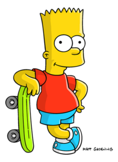
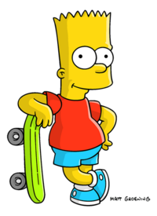

8/19/22 This week we sarted school and are doing fun things. Yesterday we did a challenge to get the marbles in the bucket.
9/2/22 SOOOOOOO this week I was abscent for 2 days of class. So on Monday we learned about mechanical engineering and safety with dangerous machine. Then the next day we learned about tinker cad and how to use it. Then as I said next 2 days abscent. I was absent since I felt weak from fasting and the next day I was at the temple. So that brings us to toady with me updating my website. Below is a picture of the temple I went to.

9/8/22 This week we made proper cads. We had to cad a rube golberg machine. It is basiclly a simple machine that starts by pusing a ball to poping a ballon. Mr.Poole left us today and will leave us tomorrow to. It is sad :(.
9/16/22 This week we started making our Rube Goldberg mchine. It is a thing with 3 simple machines. We use a see saw, slope, and lever. Something else we did was the boat challenge. We have to make a paper boat that can hold the most weight for the longest time. I hope we won. Somehting interesting is that we basiclly jerry riged the whole thing.
Click ME to see paper boat9/21/22 This week we worked on our rube guldberg machine. We were succesful. We popped our first balloon but not the second because the balloon started to deflate. I wanted to beat up Christian for harassing me in typing.

My cad

Combined cad with my group

Our Rube Guldberg machine in real life.
This is a video of our Rube Guldberg machine working.

This is a picture of a limb prostetic I made for the wild and majestic llama.
This is a video of my favorite clip from a show
9/30/22 This week we made animal prostetics and uploaded previos projects. We took a couple days on CADing our prostetic so that is basiclly what we did this week.
10/7/22 This week we disected the computer and saw the internals. Once we took everything out we had to identify what each part was and then colored it on a sheet. Once we identified it we then had to put everything back into the computer. Interesting fact is that today friday the 7th we are in someone's classroom because the wifi and power is out in Mr.Pooles classroom.:)

This is a picture of someone disecting a computer since there are no pictures of me. :(
10/15/22 This week has been fun and relaxing. 2 minimum days in one week how cool is that. Who can say that. Something funny happened this week. We are in a new classroom this week since a fuse had sparks in mr.Poole's classroom so we have been relocated. Because of this we didn't really finish putting our computer back together. But this week learned about aerospace engineering and the 4 factors that help a plane fly:Drag, lift, gravity, and trust. We demonstarted this in a compotetion using paper airplanes. After that mr.Poole thought us how to make a BOM. We are going to use that BOM to make our rocket out of a 2 litter bottle. So this is what we have been up to this week.:)
10/22/22 So this week we started to assemble our bottle. We used a 2L coke bottle. We did this project in groups of 3 so in my group it was me, MingYu, and Austin. We started of with a paper drawing. After that we made a cad then we made it in real life. Something fun we figured our is that you can hot glue paper together. So we built the rocket out of paper, cardboard, some kind of knock of wood, 2L bottle, and hot glue of course. So the teamwork was just amazing I say sarcasticly. The kind of rocket we where going for was like a glider. When it came to the actual launch our rocket's glider fell of and the bottle went flying. Yha then that was my week so goodbye now.

This is an image of what we caded up for our bottle rocket.
This is a picture of our rocket in real life.
10/28/22 So this week we didn't do much. But we did do one thing interesting. We made a using rocks, pebbles, sand, and a cotton ball to clean the water. We where basiclly making a life straw but not as good as it. I gotta say we did decent in making the water clean. Somehting to note is that when we ran the water through the filter again it helped and cleaned the water better.
Picture of our filter
Picture of what the end water looked like
This is a video of mr.Poole holding our rocket as it pressurizes and "flies".
11/4/22 So this week we are learning about electical Engineering. We have made a 3D breadboard and are learning about diodes, recistors, volts, ohms and more. We learn't about ohms's law and the equations to find volts, amps, and ohms. We also learned about diffrent types of a circuit and Jason found out that in tinker CAD you can make it so that a potato outputs about 150 volts. So today is fun because it is friday and I don't have to be at school. I am at the long beach convention center for robotics as we where invited to represent FIRST at XPrize. Woke up at 5:30 was just so fun. So yha this was my week now addios :] :).

This is a picture of a 3D circuit board I made.
11/10/22 So this week we used cicuitboards to make circuits. We used a couple diffrent components. We used recistors, rdweno, diodes, and wires. We learned a couple diffrent types of circucits and one of them was a paralell circuit. A paralell circuit is when each diode gets it's own power supply so the voltage is the same for each diode and it emits the same amount of light. This week we also had a debate on wheter it would be better to write the numbers from 1-1000000 or take a math class.
This is a series circuit

This is a paralell circuit
This is a voltage divider circuit
11/18//22 So it is that time of the week. This week we countined doing electrical engineering and doing circuit. Not only that but we also went back to enviormental engineering by making a solution for bromide water. My group made a solution of makeing a tarp to cover the water from the sun then adding heat lamps to keep the make the water boil so the chlorine can evaporate. The solution that was acctually used for that lake was using holo balls to cover everything from the sun so the chemical reactino can't happen. Like I said we also worked on circuits but this time we used the arduino to code so we could turn some diodes on and some off. Today is the last week before thanksgiving break starts. Over thangskiving break I don't do any celabration but I do use that time to travell to cool places :) . I am so excited because I am traveling and I am going to Jamaca. Over their I will do fun stuff like zipline chill at the hotel and also my favorite thing now scubadiving. Going to possibly be fully licensed or almost licensed to scuba dive anywhere in the world with or without an instructor. So yha this what I am doing so goodbye and see you people next time.
This is a picture of my solution to a real world problem. It is a tarp that has heat lamps and ventilation to get rid of the steam. Not really the best solution :(:(
Above are the videos of my arduino code and the led's turning on and of using code.
12/2/22 This week we came back from a week of relaxation and in that I went to Jamaica and came back exhausted. This week we have started civil engineering. Civil engineers are the one's who builds the structure of a building to make sure it can hold weight. The project for civil engineering is our final so definitely no presseure what so ever. But the project is basiclly building a spagetti bridge that can hold weight and is also 24 inches long. We made 2 designs and went threw some hiccups. So in the first one we struggled to take it of the cardboard because we put to much glue on the cardboard. The second design we are in the process of making it. The sadest part in all of this is that I can't do anything because I can't touch the spagetti due to my religion. Long story short the noodle is like a snake so I can't do anything besides guiding my team in what to do. Goodbye now see you next week.
This is a picture of our second design because our first design is basiclly broken.
12/9/22 This week we countinued to work on the brigde and like before I could not do anyting because I can not touch the spagetti. Once again we are doing this for out final in civil engineering. We are working on our second desgin still we are trying to make it but it is hard to make it stand up because it can fall back down. Mr.Poole wasn't here one day and the projects weren't put in the back so most people got there projects destroyed. So after that we abandoned it and went to the next next design which was pretty simple. It was basiclly a straight line that would be able to hold some weight. We double layered it so it could hold a good amount of weight. We tested it on a small scale it was 10 inches long and could hold about 442 grams of water. That is all for this week and have a falcon awesome day. Lmao so cringe. But shush I didn't say that :).
12/16/22 We are back and this week is the week we test out bridge to see how much weight it will hold. I don't think I have mentioned this but in my group it is me ofc, Ayaan, and aginehu (sorry not sure how to spell his name). We are counting to work on our bridge 3 and are working hard to finish it. We are getting closer and closer to the deadline in trying to finish it. We calculated that we are going to use about 19. Let's get to the good part. The bridge was about 25 inches long and held about a woping 500 grams. One team had a stick full of glue and held about 15 pounds. Interesting fact I leave for India in a few days so yay. This is my last updat for this year and will see you all next year. Dhruv signing of and wishing you all a merry christmas and a happy new year.
FYI sorry don't have any pics it is with Auggy probably but I do have this video. Watch below.
1/13/23 Happy New Years everyone. As you may or may not know is that I went to india for the whole break and I celebrated it with my family. I also so my grandparents after a long time so it was nice to see them. So this week we did buisness engineering basiclly understanding how buisness run. The project for that is that we have to make a pitch of an item that we have to present to people for them to "invest" in it. We choice powdered snow. It is an item that you mix with water and then you have snow. We made a presentation to give a pitch including cost, margins, where we sell, profit and more. Stay tuned to the next update for which "shark" we got a deal with and what the deal was. See you later alligator. HEHE :) :]
1/19/23 This week we countined buisness engineering by doing the presentations this week. I learned more about buisness engineering through diffrent peoples' pitchs that it is not what you sell but it is about why you sell it how the item came to be. I was able to learn that the pitch is really important you need to give all the data in order to make something sell to someone. I also learned when you are listening to a pitch you should try to understand their buisness and how they work. Also something interesting is that most of the time even if their is a diffrence in the money you are giving the one who says that they have connections is more likely to get te deal because those connections can help the buisness a lot. Goodbye thats all for this week see you next week.
Buisness engineering slides1/27/23 This week we learn't about chemical engineering. We worked on that on monday as we learned how a chemical can be hard as a rock when you hit it but it can be liquidy and you can move your hands threw it. The day after we made an experiment by making Oblek. It is a liquid that you make by mixing corn startch and water in order to make a non nutonian fluid. The next day we learned about our project for chemical engineering. We had a total of 3 options moustrap car, arudion car, or we can make a solution that better helps the school. We can work alone or in groups of 2 and I am working with Noah and we choose the arduino car. Below is a picture and a video you can look at.
2/3/23 This week we continued to work on our arduino car. We did more research on our arduino car. We looked into diffrent components to use on our car and how it works. We worked on pur cads to see how we would arange everything on the car so that we know the placement. We learned that we couldn't use the motor sheild because it takes up all the pins so that we found a smaller motor controller that we will use so that we can still hook up the leds we wanted originally to use as blinkers and headlights on the car. We also had a challenge day which was to basiclly make a bridge. So whoever maid the longest bridge won. Also something to note is that the bridge was made out of sticky notes and we only got 15 sticky notes which we cut up into 1/4 peices and made the bridge. We got it to be 120 inches long and we got second place. Someone else had won as they made a bridge that was about 140 inches. Below are some fun pics of the week.
2/10/23 So this week what we did is that we countinued to work on our arduino car. We have some code now that lets us use the leds as blinkers and headlights. We wanted to test the motors since we got it but the thing is that we didn't have a motor controller so we where unable to test the motors. But we will be able to that next week because mr.poole got the hc-o5 and the motor controller so we will be able to use that now. For those of you that don't know that the hc-o5 is a bluetooth module it is. Something to note is that we may be getting a 3D printed frame of a tesla cybertruck from Diego so fingers crossed that is happens. The thursday came and it was drumroll please. It was challenge day and it was fun. We had to make a contraption using a meter stick, rubber bands, and popsicle sticks to get a water balloon acros the court. For more details click the link below to see more instructions on what we did.
Challenge Day DocBelow is a video of our contraption in action and is a picture of it
Below is our initial design on what our car will look like.
2/17/23 This week we countinued to worked on our lovely arduino car that is coming along. We started to sauder our motors this week. We also found out how it worked as you need to put the motor into 2 difrent ports and have one on low and one on high. So through this we where able to make our wonderful wheels to start moving which was fun to see as that happened. We also started to put baklights which was cool as we now have brake lights. Something else that was cool was that this Monday there was no school so we had fun just chilling at home and robotics as we worked on the robot since it wasn't finished yet. So to rap it up this week was fun and we did a lot and imporved a lot.
2/24/23 Hello and welcome back to my update of the week. This week we had no school on monday which was cool since we could chill at home and just have fun. Then later on in the week we had continued on our car. We found a bug and it was that we had to give the wheel a nuge for it to move since there was not enough torque. So we found out that was why it wasn't moving for more than half the time. We found out that if we add a 9v battery into the motor controller then the wheels spun muchh faster and we where actually able to move. Then later on in the week we added headlights and blinkers so we where then able to make it turn lights on in the fornt and make the blinkers turn on as we are turning. That is all for this week and see you all later.
3/3/23 So this week was our last week. We worked on the car on monday, tuesday, and wednesday then thursday came the day of and we tested the car seeing how it preformed and race it with others. The car worked well as we controlled it using a wierd connection to the computer that let it get to the end. People think it was cheating but it wasn't because we where just telling it to gor forward, left, right, or backward it would've been the same if it was bluetooth because we'd be controlling it. But overall this week we didn't do mutch besides working on the car. But on friday, saturday, and sunday we have a robotics regional so GO FALKONS. Also something to note is that through this project I learned about arduino code and circuits more which was interesting and fun. Below will be a picture of the car and a video. Goodbye now and I will see you next week.
3/10/23 This week we didn't do mutch. On monday we filled out a form on how the project went. Such as how our partners where and how easy everything was and things like that. Then what we did was looked into what field of engineering we'd go into and what kind of jobs you would. You can click on the like below to see my slides. The next day we watched mark rober video's since there wasn't much to do and I also came to class late because I was talking to my counsler on classes for next year. Then Thursday we did challenge day which was lots of fun as we got to make a boat that would go down the gutter. Ours did not do that good as it got wet then completly broke. Then we come to today where we are just chilling on this minimum day waiting to go on spring break. I am so stocked as I get to go to Aruba and see my cousin. Also something interesting I did this weekend was that we went to the robotics reginol which was a wonderful experience and I had so much fun going there. Goodbye have a good break I will see you guys later.
This is a picture of out decontructed boat.
Engineering Carrer Slides Engineering Challenge Analysis for boat3/24/23 So this week we are working on
4/14/23 This week we continued to work on our boat. It has been a funn week working on the carboard boat. And in my group for the boat is is me noah diego and chris. We def had a fun week. So we basiclly worked on the cad for the week and had fun at the same time goffing around with them. Something fun was that I left schol early on wednesday because I went to the airport to pick my grandpa up. Yesterday we just started using cardboard and started figuring out the cardbooard pllacement and did math to figure out how much in the water the both would go in.
This is a video of the egg drop.

This is a pic of out cad
This is a pic of our progress. Also we thought of making this boat because we kind of based ot of a ship becaue we know a ship is strong so we made are CAD look like one.